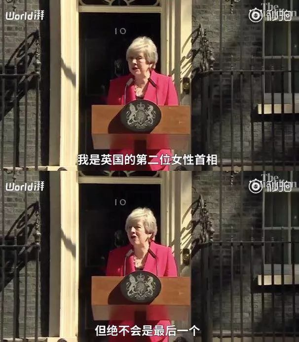

梅姨辞职——身居高位的女性也没能逃过职场的“无奈”
5月24日，英国首相特蕾莎·梅发表声明，宣布自己将会在6月7日辞职。2016年，在公布英国公投决定离开欧盟后，时任首相卡梅伦宣布辞职。随后梅姨接下这个“烂摊子”，在任首相的三年中梅姨兑现了自己给人民的承诺，同时也为与欧盟达成脱欧协议做了一次又一次的努力。
「我们会与迫在眉睫的社会不公作斗争，比如：
如果你出身贫寒，你将比他人平均少活九年。
如果你是黑人，你将比白人在刑事司法制度下受到更严酷的对待。
如果你是白人工人阶级的一员，你将比任何其他英国人更没有可能进入大学。
如果你在公立学校读书，你将比私立学校的学生拥有更少的机会从事高级职业。
如果你是女性，你将挣得比男性少。
如果你遭受心理健康之苦，你尚未获得足够的帮助。
如果你是年轻人，你将发现拥有自己的住房比以往任何时候都难。」（就职演讲）
在就职演讲中梅姨提到了国家现存的不公正，并承诺她所领导的政府：
“不会为拥有特权的少数人的利益所牵制”，
而是服务于人民的利益，并承诺会竭尽所能，赋予人民更多的掌控自己生活的权利。
在任职的三年中，梅姨做到了赋予人民更多掌握自己生活权利的承诺：
「财政赤字情况基本已经得到解决，国债总额正在减少，即将结束紧缩政策。
确保向全国各个地区提供面向未来的、好的工作，而不局限于伦敦和东南地区。在我治下，更多的人得到了稳定的工作。
修建了更多住宅来帮助首次购房者解决需求，这样年轻人就可以享受到和他们父母一代同等的机会。
保护环境、减少塑料垃圾、应对气候变化并改善空气质量。
在国家医保计划长期战略中，强调要为心理健康服务提供足够的基金，因此推行家庭暴力受害者服务全国一体化。
推行种族不平等审计，推行工资性别歧视审计。」（离职声明）
组建内阁，女性成员比例近半，提高了女性在高级职位上的比例。
25日，英国主流报刊的头版均刊登了梅姨辞职的新闻，配图基本都是发表辞职声明中流泪的特蕾莎·梅，被称为雷厉风行、坚韧的“铁娘子”，在离开首相职位时都流下了泪水。但是眼泪不是软弱的象征，眼泪的背后有多少作为女性登上政坛最高位的无奈。

让英国成为不为少数特权阶层服务，而是为我们每一个人服务的国家。
梅姨本身是“留欧派”，但她的政治理念始终是尊重民主意见，在脱欧公投后临危受命，接下了这个“烂摊子”，在就任首相的三年中为脱欧作出了很多努力，与欧盟进行了多轮谈判，虽然与欧盟最终达成协议，但该协议未能在英国议会通过。
“我一直与最亲的邻邦谈判，就我们脱欧的条件和未来的关系达成一致。以保护我们的就业、国家安全和统一。我已经尽全力说服议员支持脱欧协议，遗憾的是我没能说服他们。
尽管我努力了三次。但我依然相信坚持没有错，尽管成功的希望渺茫。”
在为脱欧而努力的三年，梅姨一直备受指责，甚至被人民指责。
3月梅姨遭逼宫，内阁11位部长皆要求其尽快辞职。《星期日泰晤士报纸》的政治编辑提姆·希普曼援引一位内阁大臣的话：“结局已近，她将在10天内离开。”[1]
5月，保守党“1922委员会”认为梅姨必须制定清晰而非含糊的下台时间表并尽快走人，否则该委员会将逼其下台。[2]
梅姨在位仅1045天，就已经做出了使人民生活变好的一些改革，为了脱欧能够尽快提上议程，做着一次又一次的努力，最终的结局令人唏嘘不已，在脱欧协议的进程中经历着一次次的失败，被党内逼宫，被国内外嘲讽，被反对党攻击，甚至被同意脱欧的人民谩骂。
身居高位的职场女性，仍旧没有逃过职场的压力与无奈。当脱欧协议迟迟拖后，人们忘记了梅姨所作出的成就，梅姨最后成为了“失败的首相”。
与卡梅伦哼着小调面带微笑的辞职不同，梅姨流下了眼泪、留下了毫不犹豫但落寞的背影。正如梅姨辞职声明中引用的尼古拉斯·温顿爵士的话：
“Never forget that compromise is not a dirty word. Life depends on compromise.
永远不要忘记，妥协不是一个肮脏的词，人生就是充满了妥协。”

“The second female prime minister, but certainly not the last.
我是英国的第二位女性首相，但绝不会是最后一个。”
资料来源：
[1] 澎湃新闻《英媒：特蕾莎·梅遭逼宫，11名内阁部长要求其十日内辞职》
[2] 21世纪经济报道《英首相再遭逼宫！梅姨被逼制定下台时间表“越快越好”，助手备好简历找工作》
演讲稿来源：
1. 特蕾莎·梅就职演讲完全版全文http://m.shxhd.cn/ielts_data/3177.html
2. 澎湃新闻，特蕾莎·梅辞职声明完整版视频
扫描或长按二维码关注煎茶小组
感谢持续关注就业性别歧视
欢迎大家给我打赏